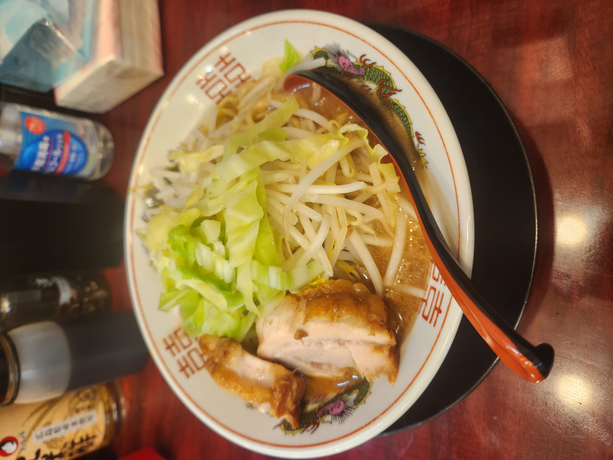

ラーメンの好きポイント
ラーメンはとにかく美味しい。それが1番の好きポイントです。具体的には、手軽さ、満足感、多様性が挙げられます。
ラーメンは全国各地どこにでもあるため、食べたい時にすぐ食べれます。一杯が比較的高カロリーなことから、忙しいランチや、夜食の時にすぐ満足感を得られます。また、全国各地で多様な進化をしており、数えきれない種類があります。自分の好きなラーメンを探してみるのも良いですね。
ラーメンの種類
ラーメンは多様な種類があり、タレの種類やご当地ラーメンなど数えきれない種類があります。ここでは代表的なラーメンを紹介します。
| ラーメンの種類 | 特徴 |
|---|---|
| しょうゆラーメン | 醤油ベースのスープで、最も伝統的なスタイルの一つです。 |
| とんこつラーメン | 豚の骨から取った濃厚なスープが特徴です。 |
| みそラーメン | 味噌をベースにした濃厚なスープで、北海道が有名です。 |
| しおラーメン | 塩をベースにしたあっさりとしたスープが特徴です。 |
| つけ麺 | スープと麺を別々にして、食べる際に麺をスープにつけるスタイルです。 |
| 担々麺 | ピリ辛のスープが特徴で、中国四川料理が原点の一つです。 |
| 家系ラーメン | 横浜発祥の、濃厚な豚骨醤油スープが特徴です。 |
| 二郎系ラーメン | 大量のもやしや野菜、分厚い豚肉のスライス、そして特大サイズの麺が特徴です。二郎インスパイアとも呼ばれています。 |
おすすめラーメン店 - ぶっ豚
向ヶ丘遊園にあるぶっ豚は、大学から徒歩20分。太麺が特徴で、二郎インスパイアのお店です。
